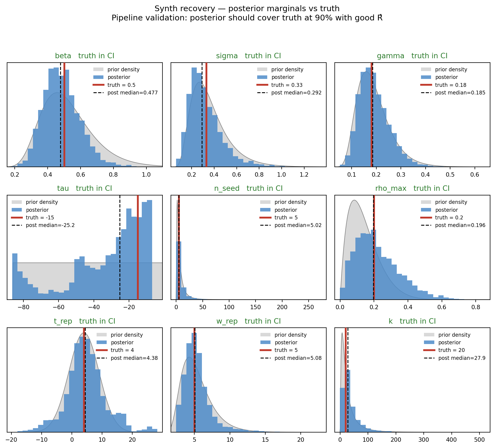
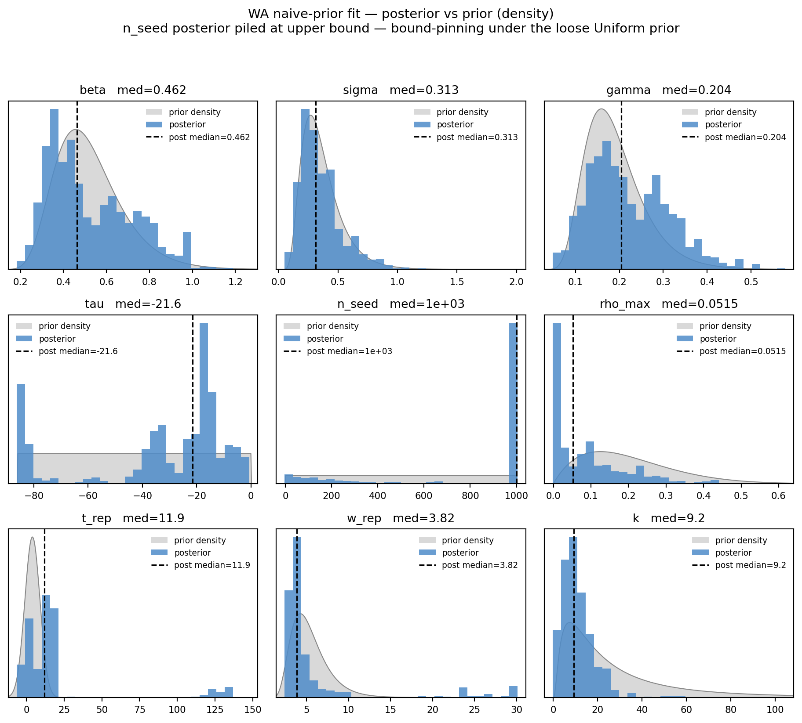
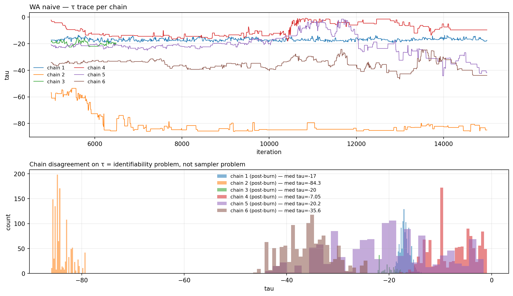
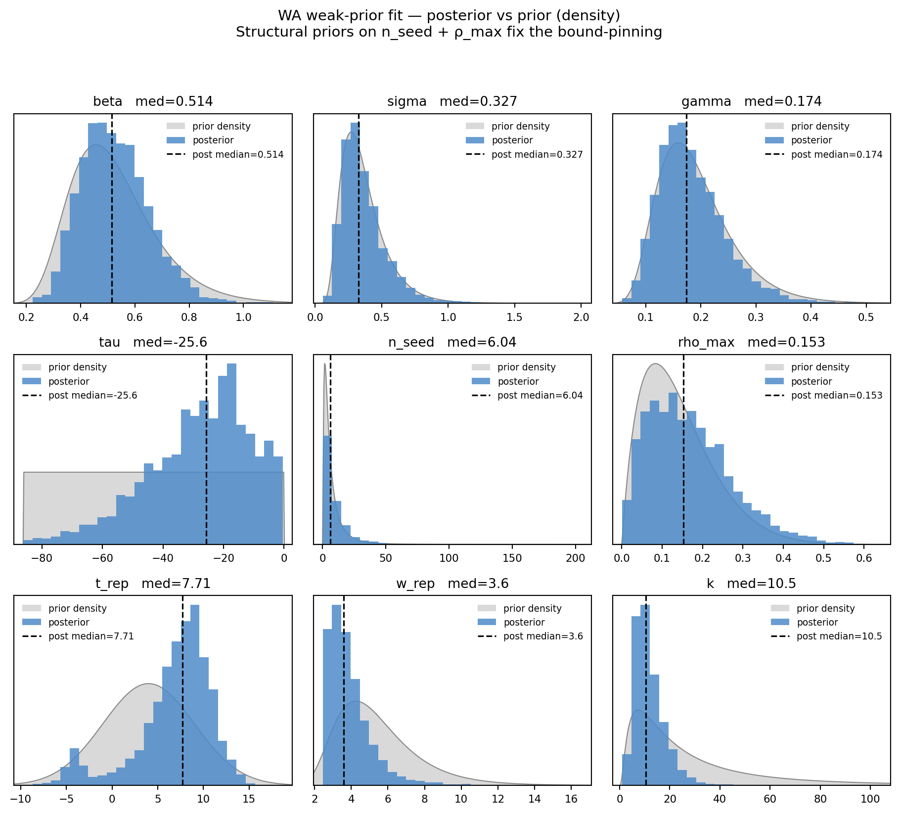
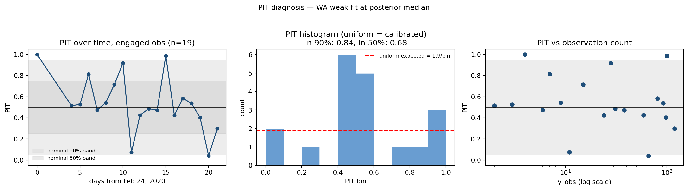
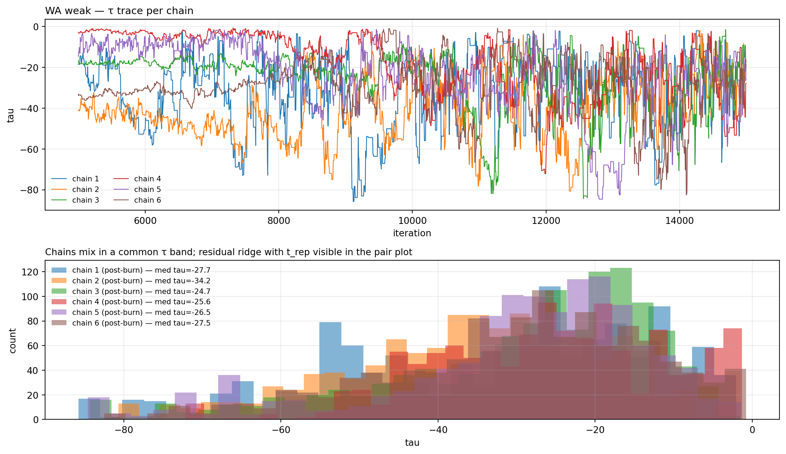
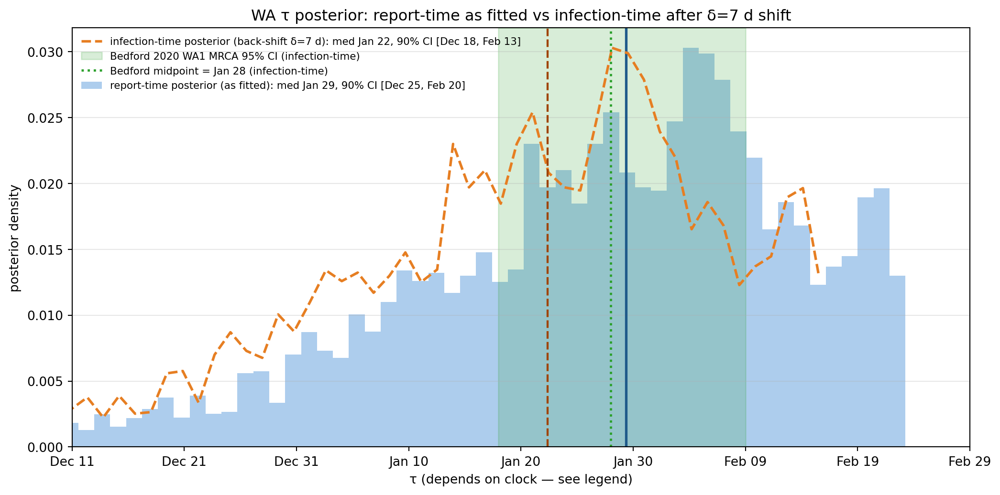
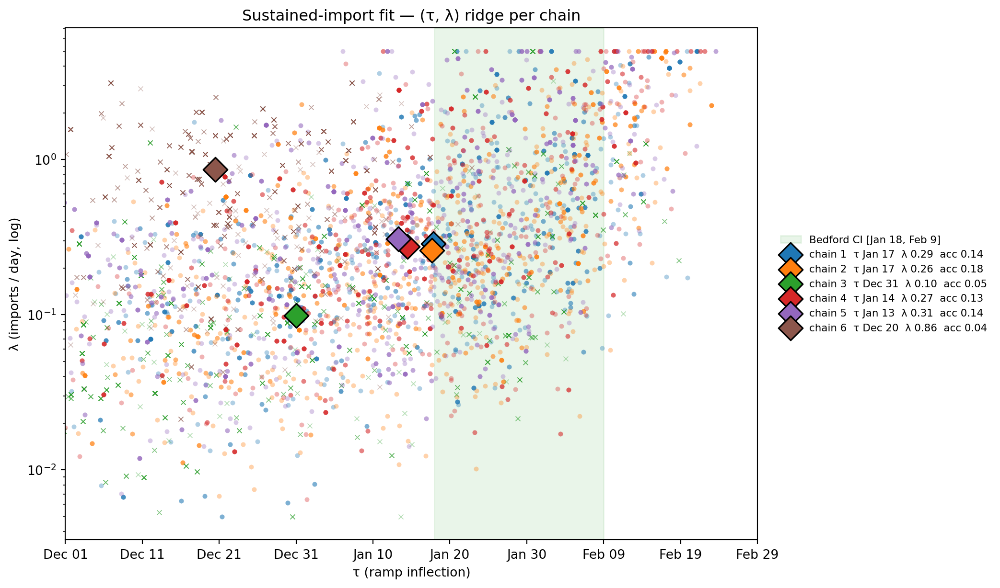
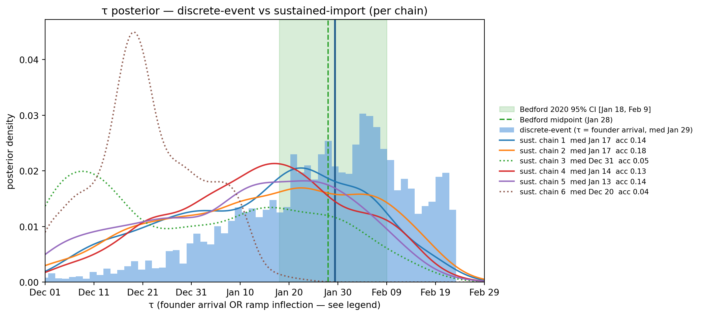

Estimating seed timing from early-COVID Washington cases
WarningPedagogical, not operational
This chapter is a worked example for teaching Bayesian compartmental inference under weakly-informative priors — not a definitive estimate of when COVID-19 arrived in Washington State. The model deliberately elides several features that a public-health-grade analysis would include: time-varying transmission, age structure, geographically concentrated mixing (early WA cases were almost entirely Seattle metro), joint hospitalization data, and serosurvey integration. See the IDM situation reports for the operational analyses we draw methodological contrast against.
NoteA note on the case data
We fit case counts from the NYT US-states feed (an exact subset committed at data/covid_wa_nyt_raw.csv, fetched from their archived 2023-03-24 snapshot). The NYT data is by report date — “each date includes all cases announced that day through midnight Eastern Time” — and the NYT does no smoothing of the main files. However, our raw daily counts show essentially no day-of-week effect (ANOVA F = 0.39, p = 0.88), in contrast to IDM’s WDRS-based analyses which show a clear weekly oscillation. The likely explanation is that WA DoH applied some form of upstream aggregation between specimen collection (where the weekend signal lives) and dashboard publication (which NYT scrapes). We could not find the 2020 WA DoH methodology documentation to verify exactly what was done — practitioners needing the raw specimen-date series should pull from WDRS directly rather than NYT.
What we’re estimating
“When did this outbreak start?” is a central question early on in an outbreak. Outbreaks can occur from a single introduction that sparks a chain of transmission, or from several introductions that cluster together or trickle in over time. For teaching purposes, we focus on the single-introduction scenario in this chapter, which is the more tractable inference problem of the two.
The single introduction scenario is determined by two numbers: when the seeding infection(s) arrived and how large the seeding event was. Thus, the two central estimands when estimating the timing of established, local transmission: the seed time, \(\tau\), and the seed size\(n_{\mathrm{seed}}\) — the importation magnitude, equivalently the number of cryptic founders.
With these two estimands, we have a two-dimensional inference problem (plus whatever else we don’t know about the infection: transmission, recovery timescales, etc.). Depending on what we assume is known, we have two options for inference:
E1: Estimate \(\tau\) assuming the seed size known. This is the simpler case: we fix \(n_{\mathrm{seed}}\) and ask only when the seed arrived. Very often \(\tau\) is identifiable and the likelihood has a single peak.
E2: Estimate \(\tau\) and \(n_{\mathrm{seed}}\) jointly. This is the honest case when we really don’t know, but is a much harder inferential task: during the exponential growth phase, the data pin only the combination \(\ln n_{\mathrm{seed}} - r\tau\), not either alone. Consequently, it’s tricky to differentiate a later, larger seed from an earlier, smaller initial seeding event — even more so when the observation process is sparse. The tradeoff between these two parameters forms a seed-timing ridge, the temporal twin of the initial-condition ridge in Identifiability, and the heart of this chapter.
Once we have estimated the seed time, we can then estimate other central quantities of interest: how long was the cryptic transmission phase (i.e. before the first observed case)? How many infections were there before the first observed case? In this vignette, we use camdl to estimate the initial seed timing and size of the early-2020 Washington State COVID-19 outbreak, and then estimate these derived quantities assuming a single-introduction scenario.
Real data: cryptic introduction in Washington State
The early-2020 Washington State COVID-19 outbreak is the textbook cryptic-introduction case, and a great example dataset to show how to estimate seed time and size with camdl. We now know from genomic analyses that the outbreak-clade common ancestor (tMRCA) is estimated to have emerged between 18 Jan and 9 Feb 2020 (Bedford et al. 2020, Science), weeks before the first observed community case (28 Feb) — this serves as a useful external reference for our seed timing estimates. But here, for the sake of a teaching example, we pretend we do not have genomic sequences or a tMRCA estimate, and ask: what can we learn about the seed time from statewide WA daily reported cases from the NYT data alone?
Before we begin fitting it’s best to carefully think through the underlying cases, timeframes, and modeling choices — as they say: garbage in, garbage out. We drop the lone 21 January travel import from the fit window: under a single-introduction model, the likelihood of an introduction occurring that early and producing a late-February explosion is vanishingly small (we literally get \(-\infty\) if we try). That impossibly small likelihood reflects that the underlying single-introduction model is wrong if we include this import case; rather than write a more complex model that accommodates a separate travel import, it’s easier to drop the data point we know came from a different seeding process and focus on community spread.
This is defensible for a teaching example but should be flagged sharply: the inference is no longer “what can reported cases alone tell us?” — it uses external epidemiological classification to remove a known importation, and the only datum sitting inside Bedford’s tMRCA window (Jan 18 – Feb 9) is the one we removed. A public-health-grade analysis would model observed cases as the sum of two processes (sporadic travel imports + local transmission) rather than dropping the imports; that change would let the model use the Jan 21 datum directly. Removing it instead — with no compensating mechanism — structurally biases the inferred \(\tau\) later, because the model now sees roughly 37 days of zeros prior to Feb 28 and reconstructs the early epidemic from a one-sided constraint (zeros push \(\tau\) later). That structural late- bias is part of why our posterior median lands at Jan 29 rather than at the early or middle of Bedford’s window.
Additionally, as COVID-19 took off in WA, non-pharmaceutical interventions (NPIs) such as large-event closures began to be rolled out in early March. A constant-β model will not be able to fit the lockdown-flattened curve. While we could try a more complex model with a time-varying β, an easier robust approach is to fit the constant-β model to the early outbreak window only, which we define to be January 22nd to March 16th, 2020 (about 5 days into the NPI ramp — a mildly post-intervention epoch, but still reasonably constant β). We also know reporting rate was not constant during the early outbreak as testing and case-finding scaled up; we account for this with a logistic reporting ramp below.
The SEIR + discrete-seed model
In camdl, time is not internally indexed by Julian calendar dates; instead, time is a continuous variable that we can anchor to arbitrary reference or origin calendar dates as we please. In our COVID-19 WA example, we choose to anchor our time reference \(t = 0\) to 24 February 2020, four days before the first community case — close enough to the testing onset that priors on \(t_{\mathrm{rep}}\) land near zero, and far enough back that \(\tau\) has signed days-before-data meaning.
We model the seeding as a discrete event that injects \(n_{\mathrm{seed}}\) founders into the latent compartment at time \(\tau\): add(E, n_seed) at [tau]. This is the simplest possible seeding mechanism and the one that matches the “single-introduction” framing above. It pins the likelihood interpretation cleanly: \(\tau\) is the moment the founders arrived, \(n_{\mathrm{seed}}\) is how many of them. The discrete event makes \(\tau\) a step in the likelihood, which is awkward for gradient-based methods but fine for our particle-filter pipeline. We revisit a continuous sustained-import alternative in §5 and a Gaussian-pulse variant in the appendix.
The second modeling structure choice we make now is to treat the reporting rate as a logistic ramp of time: \(\rho(t) = \rho_{\max} / (1 + e^{-(t - t_{\mathrm{rep}})/w_{\mathrm{rep}}})\). We observe not infections but a fraction \(\rho\) of incidence, and early in an emerging outbreak that fraction is not constant: detection climbs from near-zero to a ceiling \(\rho_{\max}\) as testing and case-finding scale up. If we were to hold reporting rate \(\rho\) constant through time, the model could only bend the reported curve into the observed S-shape by speeding up \(\beta\) or shifting the seed, which risks blurring a surveillance artifact as epidemic dynamics, and biasing the very \(\tau\) and \(n_{\mathrm{seed}}\) we are after. The ramp gives the reported fraction its own degree of freedom.
Warningρ(t) is doing more structural work than its name suggests
The logistic \(\rho(t)\) is presented as “the reporting fraction ramp,” but in this model it absorbs at least four distinct time-varying processes: (a) genuine scaling of reporting fraction (more labs come online), (b) the infection-to-report delay \(\delta\) that the observation model incidence(infection) × ρ(t) does not otherwise represent, (c) case-definition changes (CDC’s testing criteria broadened on Mar 4), and (d) any geography- specific surveillance differences as the outbreak moved from Snohomish to King County. The ramp gives the inference enough flexibility to fit the observed S-curve, but it does not identify any one of these processes separately. In particular, the \(\delta\) part is most of why the inferred \(\tau\) is on the report-date clock — see the warning in §4.
Warning“General coronavirus” priors on (β, σ, γ) are more COVID-shaped than they sound
The dynamics priors used throughout this chapter — \(\beta \sim \mathrm{LogN}(\mu = -0.693, \sigma = 0.3)\) (median 0.50/d, 90% CI [0.31, 0.81]), \(\sigma \sim \mathrm{LogN}(\mu = -1.108, \sigma = 0.45)\) (latent period \(1/\sigma\) ≈ 3 d), \(\gamma \sim \mathrm{LogN}(\mu = -1.715,
\sigma = 0.35)\) (infectious period \(1/\gamma\) ≈ 5.5 d) — imply \(R_0 \approx
2.78\) at prior medians, with a 90% prior CI roughly \([1.5, 5]\) and serial interval \(\sim 5\)–10 d. That is textbook SARS-CoV-2 from mid-February 2020. We can defend it as the early-2020 knowledge state (the WHO situation reports had already published these envelopes by then), but the chapter’s framing of “general coronavirus priors, not COVID-specific” understates how much COVID parameter structure is baked into the dynamics before \(n_{\mathrm{seed}}\) and \(\rho_{\max}\) enter the picture. For a genuine novel-pathogen scenario (no analogue reference class) these priors would have to be much broader, and the seed-timing estimates correspondingly much wider.
The model file:
seed-timing/models/seir_synth.camdl
# SEIR + discrete seed — synthetic-recovery variant. Pre-COVID-vintage# coronavirus priors (Feb 2020 knowledge state). Same dynamics as the# seir_wa_*.camdl variants; only n_seed / rho_max priors differ.time_unit = 'daysorigin = date("2020-02-24")compartments { S, E, I, R }parameters { beta : ratein [0.01, 5.0] ~ log_normal(mu = -0.693, sigma = 0.3) sigma : ratein [0.05, 2.0] ~ log_normal(mu = -1.108, sigma = 0.45) gamma : ratein [0.05, 1.0] ~ log_normal(mu = -1.715, sigma = 0.35) tau : instant in [date("2019-12-01"), date("2020-02-24")] ~ uniform(lower = -86.0, upper = 0.0) n_seed : countin [1, 1000] ~ log_normal(mu = 1.609, sigma = 1.0) N0 : countin [1000, 10000000] rho_max : probabilityin [0.0, 1.0] ~ beta(alpha = 2.0, beta = 8.0) t_rep : instant in [date("2020-02-09"), date("2020-03-25")] ~ normal(mu = 4.0, sigma = 5.0) w_rep : duration in [2.5, 30.0] ~ log_normal(mu = 1.609, sigma = 0.4) k : positivein [0.1, 1000.0] ~ log_normal(mu = 3.0, sigma = 1.0)}let N = S + E + I + Rlet rho_t = rho_max / (1 + exp(-(t - t_rep) / w_rep))transitions {#[lineage]infection : S --> E @ beta * S * I / Nprogression : E --> I @ sigma * Erecovery : I --> R @ gamma * I}events {founders_arrive : add(E, n_seed) at [tau]}observations {cases : { projected = incidence(infection)every = 1'dayslikelihood = neg_binomial(mean = rho_t * projected, r = k) }}init { S = N0 E = 0 I = 0}simulate {# WA pre-lockdown window — same SNR regime as the real-data fit.from = date("2019-11-15")to = date("2020-03-16")}
We use three variants of this model through the chapter:
models/seir_synth.camdl — synthetic recovery (general-CoV priors on every parameter; the synthetic-data we generate is then fit back to test the pipeline).
models/seir_wa_naive.camdl — WA real data, same priors as synth. We use this first to see what happens when the priors are uninformative: the fit hits the parameter bounds (§2).
models/seir_wa_weak.camdl — WA real data, with weakly-informative priors on \(n_{\mathrm{seed}}\) and \(\rho_{\max}\) added. These priors are the load-bearing piece that regularises the seed-timing ridge (§3-§4).
1. Synthetic recovery: does the pipeline work?
Before touching real data, we run the inference on synthetic data we know the truth for. The point is to catch issues with the inference machinery that would otherwise hide inside an honest-looking fit on real data: a bad init basin, a poorly-tuned proposal scale, a prior-vs-bound mismatch. If the pipeline can’t recover the truth from data simulated under the model itself, no real-data result from the same pipeline is trustworthy.
Truth parameters live in fits/synth_truth.toml (\(\beta = 0.5\), \(\sigma = 0.33\), \(\gamma = 0.18\), \(\tau = -15\) (Feb 9, 2020), \(n_{\mathrm{seed}} = 5\), \(\rho_{\max} = 0.20\), \(t_{\mathrm{rep}} = 4\), \(w_{\mathrm{rep}} = 5\), \(k = 20\), \(N_0 = 10^6\)). The simulator is run for 122 days from Nov 15, 2019 and truncated to \(t \in [-33, +21]\) (Jan 22 – Mar 16, 2020) to match the WA pre-lockdown window’s SNR regime — same observation window, same data density, same dynamic regime that the real fit will face.
Figure 11.1: Synthetic and real WA data side-by-side. Truth τ = −15 (Feb 9, 2020) marked. The synthetic epidemic peaks higher than WA’s pre-lockdown window catches because the truth params produce a steeper-growing outbreak than WA’s observed dynamics — but both are in the same regime.
Fitting the synthetic data.camdl survey finds good chain starts via Latin-hypercube landscape sampling, then camdl fit run does the PMMH posterior pass initialised from the top-k survey points (survey_top_k):
The CLI summary covers R̂ / ESS / MLE per parameter; below is the synth-specific “did the posterior 90% CI cover the truth value?” check which camdl fit summary doesn’t compute (it has no notion of truth):
show code
print(f"{'param':>8s}{'truth':>7s}{'median':>9s}{'90% CI':>22s} cov?")print("-"*60)for p in PARAMS: q = np.quantile(draws_s[p].to_numpy(), [0.05, 0.5, 0.95]) t = TRUTH[p] cov ="✓"if q[0] <= t <= q[2] else"✗"print(f" {p:>8s}{t:>+7.2f}{q[1]:>+9.3f} "f"[{q[0]:>+7.2f}, {q[2]:>+7.2f}] {cov}")
fig, _ = marginal_grid( draws_s, PARAMS, truth=TRUTH, priors=PRIORS_WEAK, ncols=3, title="Synth recovery — posterior marginals vs truth", subtitle="Pipeline validation: posterior should cover truth at 90% with good R̂")plt.show()

Figure 11.2: Synthetic recovery — posterior marginals (blue) vs prior density (gray) with truth (red lines). Pipeline validation: posterior should cover truth and concentrate inside the prior.
A visible check that the posterior is doing more than echoing the prior: prior→posterior contraction, defined per parameter as
(Schad, Betancourt & Vasishth 2021, Psychol. Methods). Values near 1 mean the data shrank the uncertainty by a lot; values near 0 mean the posterior is essentially the prior; negative values flag the posterior being wider than the prior (usually a sign of a ridge pushing mass into the prior tail). Alongside it, \(\mathrm{shift}/\sigma_{\mathrm{pr}} \;=\; (\widehat{\mathrm{med}}_{\mathrm{post}} - \mathrm{med}_{\mathrm{prior}})\,/\,\mathrm{sd}_{\mathrm{prior}}\) measures how far the posterior median moved from the prior median, in prior-sd units.
Reading. For synthetic data with a well-identified model the contraction should be visibly positive for parameters the data can pin (e.g. tau — the data spans the seed event), and near zero for parameters the data can’t directly inform with this stream (e.g. n_seed and rho_max jointly under the case-only ridge). A near-zero contraction on something the data should constrain is the diagnostic flag that the fit is mostly inheriting the prior.
Note the negative contractions on n_seed, rho_max, and t_rep — the posterior on those parameters is genuinely wider than the prior. Schad et al. flag this specifically as a ridge pushing posterior mass into prior tails. On synthetic data generated from the model itself, this is a clean diagnostic of practical non-identifiability: even with truth at known values and the data-generating process exactly matched, the case-only stream + this observation model cannot inform \(n_{\mathrm{seed}}\) and \(\rho_{\max}\). The weakly-informative priors we add for real data in §3 are not restoring information the data has but the sampler is missing — they are filling in information the data never carries to begin with.
The point estimate is also weaker than the “✓ truth covered” badge above suggests. The synthetic \(\tau\) truth was \(-15\); the posterior median is about 10 days off, and the 90% CI is roughly 74 days wide — nearly as wide as the 86-day uniform prior. Coverage is satisfied because the posterior is essentially uninformative on the seed-timing direction, not because the recovery is sharp. Synthetic recovery here is best read as “the pipeline isn’t catastrophically broken”, not “the inference is well-calibrated for the WA data regime” — the latter would require a tighter posterior than we’re getting on the data-generating model itself.
Figure 11.3: Synthetic recovery — pair plot. Truth marked with black ×.
2. WA real data, uninformative priors: the bound-pinning problem
With the pipeline confirmed on synthetic data, we now apply the same model to the real WA data. The natural first move is to bring no extra COVID-specific information to the table: use the same general-coronavirus priors as the synth fit (so \(\beta\), \(\sigma\), \(\gamma\) are weakly informed by general respiratory-virus knowledge), and put deliberately uninformative priors on the two parameters most specific to the cryptic-outbreak setting: \(n_{\mathrm{seed}}\) and \(\rho_{\max}\). The fit toml is fits/wa_naive.toml; the model file is models/seir_wa_naive.camdl, which is dynamically identical to the synth model — only the priors on \(n_{\mathrm{seed}}\) (Uniform(1, 1000)) and \(\rho_{\max}\) (Beta(2, 8), mildly weak) differ.
Prior-predictive check — do our priors imply plausible epidemics?
Before fitting, simulate 200 trajectories from each prior set and check the envelope against the WA observed curve. The right answer is “the priors are loose enough to contain the data, but not so loose that they imply science-fiction outbreaks.” A prior-predictive envelope that fails to contain the observed data would be a sign the priors are too tight; one that puts the observed curve in the deep tail would be a sign the priors are too loose.
# Sample 200 prior draws per fit toml, then forward-simulate each draw.# (Once camdl#86 lands the python bridge step collapses to a single# `camdl simulate --draws prior --fit FOO.toml` invocation.)python scripts/gen_predictive_draws.pycamdl simulate models/seir_wa_naive.camdl --draws data/prior_draws_naive.tsv \--backend chain_binomial --dt 0.5 --seed 11 \--obs-only data/prior_pred_naive.tsvcamdl simulate models/seir_wa_weak.camdl --draws data/prior_draws_weak.tsv \--backend chain_binomial --dt 0.5 --seed 12 \--obs-only data/prior_pred_weak.tsv
Figure 11.4: Prior-predictive envelopes (5–50–95% across 200 draws) vs WA observed cases. Naive priors (left, gray-blue) put the observed curve well within the envelope but produce a 95th-percentile epidemic ~100× larger than what we saw — the bound-pinning failure mode we’re about to demonstrate is foreshadowed here. Weak priors (right, blue) tighten the upper envelope while still containing the data.
Both prior sets contain the WA observed curve inside the 5–95% band — neither prior is so tight that the data is impossible under it. The naive envelope on the left has an upper tail two orders of magnitude above the observed curve, driven by the Uniform(1, 1000) on n_seed and the loose Beta(2, 8) on ρ_max letting through both high-detection low-spread runs and low-detection explosive-spread runs. The weak envelope on the right caps that upper tail without moving the lower edge — which is what “weakly informative” should look like.
/Users/vsb/projects/work/camdl-book/guide/fitting/seed-timing/results/fits/wa_naive-245860fd/real/fit_1/
camdl 0.1.0+ca893bf
(no completed stages found in /Users/vsb/projects/work/camdl-book/guide/fitting/seed-timing/results/fits/wa_naive-245860fd/real/fit_1)
show code
fig, _ = marginal_grid( draws_n, WA_PARAMS, truth=None, priors=PRIORS_NAIVE, ncols=3, title="WA naive-prior fit — posterior vs prior (density)", subtitle="n_seed posterior piled at upper bound — bound-pinning under the loose Uniform prior")plt.show()

Figure 11.5: WA naive-prior fit — posterior (blue) vs prior (gray) on a density scale. Watch n_seed: the posterior pile is jammed against the right edge of the Uniform(1, 1000) prior rather than peaking in its interior — that’s the bound-pinning failure mode the loose prior allows.
show code
chains_n = load_pmmh_chains(WA_N)fig, _ = trace_with_posterior( chains_n, "tau", truth=None, title="WA naive — τ trace per chain", subtitle="Chain disagreement on τ = identifiability problem, not sampler problem")plt.show()

Figure 11.6: τ trace per chain. If chains end at different τ values (R̂ > 1.1), they’ve found different basins — symptom of the (β, τ, n_seed) identifiability ridge.
Figure 11.7: WA naive — posterior pair plot. The (β, τ, n_seed) ridge appears as chain-clustered modes that don’t overlap, and the log_posterior cell shows discrete clumps at different values rather than a single hump.
Diagnosis. The general-CoV priors are too loose to constrain n_seed — the likelihood ridge along (β, τ, n_seed) lets chains find high-likelihood combinations with very large founder counts (n_seed runs to the upper bound 1000). The data + these priors cannot pin n_seed on their own. The chain-disagreement on τ is the visible signature of this.
This “bound-pinning failure” and the “\((\tau, n_{\mathrm{seed}})\) likelihood ridge” we will visualise empirically in §4.5 are the same surface viewed two different ways. The chains here are walking up the ridge until they hit the n_seed=1000 wall, because the uniform prior gives them no reason to stop earlier. The “fix” in §3 is not fixing the bound-pinning mechanism — it is replacing the uniform prior with one whose density decays along the ridge, so the chains stop somewhere in the middle rather than at the wall. Same likelihood surface, different terminations.
3. Adding weakly-informative structural priors
The fix is not to tighten the bounds — that would be a confession that we don’t trust the prior to do its job. Instead we regularise the ridge with weakly-informative priors on \(n_{\mathrm{seed}}\) and \(\rho_{\max}\), chosen on general emerging-pathogen reasoning, not anything COVID-specific.
For \(n_{\mathrm{seed}}\): a cryptic outbreak that goes undetected for weeks before its first community case rarely starts with hundreds of co-arriving founders — the prior probability of multi-hundred-founder seeding into a single metro area is small for any new respiratory pathogen. A LogNormal(log 5, 1.0) prior (median 5, 90% CI ≈ [1, 26]) reflects this: it puts most of its mass on small-to-modest founder counts, suppresses the \(n_{\mathrm{seed}} = 1000\) corner the uninformative prior allowed, and is wide enough that the data drives the central tendency.
For \(\rho_{\max}\): an emerging pathogen with no validated assay in the field will not be detected at 50%+ for weeks; early reporting fractions of order 5–20% are typical across novel respiratory pathogens. Beta(2, 12) (median 0.14, 90% CI [0.03, 0.36]) reflects this.
The key claim is that these priors do not encode anything Bedford-specific or hindsight-specific. They are what an honest analyst would have written down in early February 2020 from general epi reasoning, before the Bedford tMRCA estimate or the Worobey clade analyses existed. Whether the resulting posterior agrees with Bedford then becomes a real out-of-sample comparison, not a foregone conclusion.
These priors live in models/seir_wa_weak.camdl — the only differences from seir_wa_naive.camdl are the n_seed and ρ_max~ declarations. The bounds stay wide; the regularization comes from the prior, not from a tightened box:
Fit configurations are basically empty — the model file owns the priors, bounds, and transforms; the fit toml just says “estimate these parameters, fix N0, run PMMH for 15k iter with survey-seeded starts.”
The full canonical fit config:
seed-timing/fits/wa_weak.toml
# WA real data, WEAK-PRIOR canonical fit.## Priors live in models/seir_wa_weak.camdl:# n_seed ~ LogNormal(log 5, 1.0) (median 5, 90% CI [1, 26])# rho_max ~ Beta(2, 12) (median 0.13, P(>0.5) ~ 0.02)# Both reflect general pre-COVID surveillance reasoning, not COVID-specific.## N0 fixed at 7,600,000 (WA pop, structural). Every other parameter# estimated. Bounds on n_seed and rho_max stay wide so the prior does the# work rather than the bound.[model]camdl="../models/seir_wa_weak.camdl"output_dir="../results/wa_weak"[data.observations]cases="../data/covid_wa_growth.tsv"[config]backend="chain_binomial"dt=0.5[estimate]beta={ bounds =[0.01,5.0], start =0.5 }sigma={ bounds =[0.05,2.0], start =0.33 }gamma={ bounds =[0.05,1.0], start =0.18 }tau={ bounds =[-85.0,0.0], start =-30.0 }n_seed={ bounds =[1,1000], start =5 }rho_max={ bounds =[0.0,1.0], start =0.13 }t_rep={ bounds =[-15.0,30.0], start =4.0 }w_rep={ bounds =[2.5,30.0], start =5.0 }k={ bounds =[0.1,1000.0], start =20.0 }[fixed]N0=7600000[stages.posterior]algorithm="pmmh"backend="chain_binomial"chains=6particles=800iterations=15000burn_in=5000thin=5init="survey_top_k"survey_top_k_n=4adapt=true
Derived R₀ = β/γ: median 2.90, 90% CI [1.77, 5.12]
show code
fig, _ = marginal_grid( draws_w, WA_PARAMS, truth=None, priors=PRIORS_WEAK, ncols=3, title="WA weak-prior fit — posterior vs prior (density)", subtitle="Structural priors on n_seed + ρ_max fix the bound-pinning")plt.show()

Figure 11.8: WA weak-prior fit — posterior (blue) vs prior (gray) on a density scale. Tall narrow blue = data informative; blue ≈ gray = posterior mostly inherits the prior. n_seed and ρ_max now have unimodal posteriors within their priors; bound-pinning is gone.
Is the fit just matching the prior?
Same contraction diagnostic as the synth section (formula above):
Reading this table: tau should show high contraction and a large shift in prior-sd units — that’s the data placing τ where the prior had wide uniform support. n_seed shows modest contraction with a small shift — the prior is weakly informative by design, so the data refines it a little but mostly stays where we anchored it. If any parameter’s contraction is ≈ 0 and shift ≈ 0, the posterior is purely the prior — a sign that parameter is unidentified from this data (and the prior is doing all the work).
Effective number of parameters via PSIS-LOO
The contraction table is per-parameter. The aggregate version is \(p_{\mathrm{LOO}}\), the effective number of parameters from Pareto-smoothed-importance-sampling leave-one-out cross-validation (Vehtari, Gelman & Gabry 2017, Stat. Comput.). \(p_{\mathrm{LOO}}\) is the penalty term in
i.e. “how many parameters’ worth of fitting flexibility the data sees.” A well-identified \(k\)-parameter model has \(p_{\mathrm{LOO}} \approx k\); a model with weakly-identified or prior-pinned parameters has \(p_{\mathrm{LOO}} < k\).
Computing p_LOO needs per-observation log-likelihoods, which we get by re-running camdl pfilter --trace for 50 subsampled posterior draws of each fit:
# Re-run pfilter --trace at 50 subsampled posterior draws per fit,# build the (n_draws x n_obs) pointwise log-lik matrix, save .npy.python scripts/gen_pointwise_loglik.py
fit p_LOO LOO SE k̂>0.7 p_WAIC WAIC p_DIC
------------------------------------------------------------------------------
wa_naive 5.31 161.9 14.9 0% 5.52 162.3 240.31
wa_weak 5.69 164.6 15.7 4% 6.19 165.6 4.44
Nominal parameter count (estimated, not fixed): 9
PSIS-LOO ran on 50 draws x 55 obs (k̂ > 0.7 flags unreliable obs)
The nominal model has 9 estimated parameters. PSIS-LOO says both fits use ≈ 5–6 effective parameters — meaning ~3–4 of the 9 nominal parameters are mostly prior-driven, consistent with what the contraction table showed individually (σ, n_seed, ρ_max have low contraction). PSIS-LOO can’t tell you which parameters are prior-driven (the contraction table can), but it gives you a disciplined aggregate complexity number you can carry into model comparisons.
Caveat: PSIS-LOO on 50 subsampled draws inherits any chain-mixing problems the full posterior has. PSIS importance weights need good tail coverage of the posterior the weights are computed against; \(\hat
k\) measures whether the importance-sampling step is doing its job given the draws supplied, not whether those draws are a representative sample of the actual posterior. With the wa_weak full-chain R̂ at 1.22 on τ (reduced to 1.03 on the post-burn portion we use, but still a flag), the absolute \(p_{\mathrm{LOO}} \approx 5.5\) should be read as “the model uses between 5 and 6 effective parameters in the post-burn region the chains agreed on” — not as a precise count.
The contrast with p_DIC is also informative. p_DIC for wa_naive balloons because PMMH’s per-iteration total log-likelihood varies wildly across chains stuck in different basins; PSIS-LOO doesn’t inherit that pathology because it works per-observation, where each draw’s contribution is locally sensible regardless of basin disagreement. This is exactly why modern practice (Vehtari et al. 2017) prefers PSIS-LOO over DIC: PSIS-LOO is robust to the kind of posterior pathology that the chain-mixing diagnostics flag separately. The k̂ column flags whether PSIS itself is reliable — wa_weak at 4% is well below the 10% rule-of-thumb threshold, so the p_LOO number is trustworthy.
Model comparison via prequential elpd
camdl compare ranks fits by prequential elpd — the one-step-ahead predictive log-density summed along the time series. For state-space models this is the natural target (the filter is already computing it), respects temporal order (no leak from future to past via posterior conditioning), and avoids the importance-sampling diagnostics that make PSIS-LOO awkward on short series (Bürkner, Gabry & Vehtari 2020, Comp. Stat. & Data Analysis). PSIS-LOO above gave us per-fit complexity; camdl compare gives the selection verdict.
To run, each fit needs a prequential.json at the posterior median:
# Write posterior-median params, then score the model on its own data# step-by-step under the particle filter — that's prequential elpd.camdl pfilter models/seir_wa_weak.camdl \--params results/fits/wa_weak-LATEST/real/fit_1/posterior/median_params.toml \--data data/covid_wa_growth.tsv --particles 2000 --dt 0.5 --seed 7 \--save-prequential results/fits/wa_weak-LATEST/real/fit_1/posterior/prequentialcamdl compare results/fits/wa_naive-LATEST/real/fit_1/posterior \ results/fits/wa_weak-LATEST/real/fit_1/posterior
Reading. Δelpd = +183 nats — that’s ≈ +3.3 nats per observation in favor of wa_weak. The e-value (Bayes-factor-equivalent) is 3 × 10⁷⁹, decisive on any scale. CRPS confirms the same ranking: wa_naive is off by ~70 cases/day in average step-ahead prediction vs wa_weak’s ~3.
Caveat on the size of the Δelpd. The 794.9 dB e-value separates the two fits decisively, but most of that gap reflects wa_naive being unconverged and visiting bound-pinned \(n_{\mathrm{seed}}=1000\) regions that produce wildly wrong predictions, not that wa_weak is well-calibrated in some absolute sense. Comparing two posteriors via prequential elpd when one of them has chain disagreement R̂ ≈ 14 on \(\rho_{\max}\) (see §2 trace plot) gives you a number, but the magnitude is doing two things at once: legitimately ranking the structurally better model, and inheriting the prequential cost of wa_naive’s sampler pathology. The ranking itself is robust; the size is not a clean Bayes factor.
But both fits flag PIT_cov90 well below the nominal 0.90 — the predictive intervals look catastrophically under-covered. Before patching the observation model, we need to interrogate what’s driving the low number: actual miscalibration in the data window, or an artifact of how PIT is computed on a long pre-data padding tail.
Where does the PIT-coverage gap actually live?
The prequential trace runs from t = -33 (Jan 22, the start of the WA data file) to t = 21 (Mar 16). For most of that window the model predicts \(\mu \approx 0\) cases and the data has \(y = 0\) — both sides are at the floor and PIT collapses to its degenerate upper value of 1.0. Those rows trivially fall outside the central 90% predictive interval \([0.05, 0.95]\), dragging down PIT_cov90 even though they indicate correct posterior predictive (“the model also knew there were no cases yet”).
Stripping pre-data padding and computing PIT only over the engaged observations (rows where the model’s posterior-predictive median is > 0.5) gives a much more honest picture:
show code
WW_POST = WA_Wpreq_dir = WW_POST# Generate the prequential trace at posterior median if missingpreq_path = preq_dir /"prequential.tsv"ifnot preq_path.exists():# Write median params + call pfilter --save-prequential med = {p: float(np.median(draws_w[p].to_numpy())) for p in WA_PARAMS} med["N0"] =7_600_000 medfile = preq_dir /"median_params.toml"with medfile.open("w") as f:for k, v in med.items(): f.write(f"{k} = {v}\n")import subprocess subprocess.run( ["camdl", "pfilter", "models/seir_wa_weak.camdl","--params", str(medfile.relative_to(ST)),"--data", "data/covid_wa_growth.tsv","--particles", "2000", "--dt", "0.5", "--seed", "7","--save-prequential", str((preq_dir/"prequential").relative_to(ST))], cwd=str(ST), check=True, capture_output=True)df = pl.read_csv(preq_path, separator="\t")df_eng = df.filter(pl.col("y_obs") >0)t = df_eng["t"].to_numpy()y = df_eng["y_obs"].to_numpy()pit = df_eng["pit"].to_numpy()in90 = ((pit >=0.05) & (pit <=0.95)).mean()in50 = ((pit >=0.25) & (pit <=0.75)).mean()print(f"All rows in prequential trace: {df.height}")print(f"Engaged (y_obs > 0): {df_eng.height}")print(f"PIT_cov90 — all rows (camdl compare reports): "f"{((df['pit'] >=0.05) & (df['pit'] <=0.95)).mean():.2f}")print(f"PIT_cov90 — engaged rows only: {in90:.2f} (nominal 0.90)")print(f"PIT_cov50 — engaged rows only: {in50:.2f} (nominal 0.50)")
fig, axes = plt.subplots(1, 3, figsize=(15, 4.2))cmap = plt.get_cmap("tab10")axes[0].plot(t, pit, "o-", color="#1f4e79", markersize=5)axes[0].axhline(0.5, color="black", linewidth=0.6)axes[0].axhspan(0.05, 0.95, color="#dddddd", alpha=0.5, label="nominal 90% band")axes[0].axhspan(0.25, 0.75, color="#bbbbbb", alpha=0.3, label="nominal 50% band")axes[0].set_xlabel("days from Feb 24, 2020")axes[0].set_ylabel("PIT")axes[0].set_title(f"PIT over time, engaged obs (n={len(t)})")axes[0].set_ylim(-0.05, 1.05)axes[0].legend(fontsize=8, frameon=False)axes[1].hist(pit, bins=10, range=(0, 1), color="#4f8cc9", edgecolor="white", alpha=0.85)axes[1].axhline(len(pit)/10, color="red", linestyle="--", label=f"uniform expected = {len(pit)/10:.1f}/bin")axes[1].set_xlabel("PIT bin")axes[1].set_ylabel("count")axes[1].set_title(f"PIT histogram (uniform = calibrated)\n"f"in 90%: {in90:.2f}, in 50%: {in50:.2f}")axes[1].legend(fontsize=8, frameon=False)axes[2].semilogx(np.maximum(y, 1), pit, "o", color="#1f4e79", markersize=6)axes[2].axhline(0.5, color="black", linewidth=0.6)axes[2].axhspan(0.05, 0.95, color="#dddddd", alpha=0.5)axes[2].set_xlabel("y_obs (log scale)")axes[2].set_ylabel("PIT")axes[2].set_title("PIT vs observation count")axes[2].set_ylim(-0.05, 1.05)fig.suptitle("PIT diagnosis — WA weak fit at posterior median", fontsize=11)fig.tight_layout(rect=(0, 0, 1, 0.95))plt.show()

Figure 11.9: PIT diagnosis on engaged observations only (y_obs > 0). Left: PIT trajectory over time, with the central 90% predictive band shaded. Middle: PIT histogram (uniform = well-calibrated). Right: PIT vs observation magnitude. The two outliers near PIT=0 are the lockdown-day reporting spike (Mar 16) which no stationary obs model can explain.
The engaged-observation PIT_cov90 of \(\approx 0.84\) is essentially nominal — only two observations fall noticeably below the central band, and both correspond to the Mar 16 lockdown-day reporting spike (visible in the right panel as the two near-zero PIT values at \(y
\approx 100\)). The 50% interval is in fact slightly over-covered at \(\approx 0.68\), meaning the central predictive density is a bit too wide, not too narrow.
This says the wa_weak fit is calibrated where the data has signal; the apparent PIT_cov90 = 0.45 reported by camdl compare is dominated by the degenerate pre-data tail. The methodological lesson: when prequential PIT coverage looks pathological, always segment the trace by whether the model is at the floor before declaring the fit miscalibrated.
Sample-size caveat. The “engaged” sample is small: \(n \approx 19\) observations, of which two are the Mar 16 lockdown-day spike (dropped as outliers, \(n_{\mathrm{eff}} = 17\)). A binomial proportion of 0.84 on \(n = 17\) has standard error \(\approx 0.09\), so the 90% nominal coverage is “consistent with the available sample” rather than “essentially nominal.” The fit is not strongly miscalibrated where it has signal, but 17 observations is not enough to confirm or reject calibration tightly.
show code
chains_w = load_pmmh_chains(WA_W)fig, _ = trace_with_posterior( chains_w, "tau", truth=None, title="WA weak — τ trace per chain", subtitle="Chains mix in a common τ band; residual ridge with t_rep visible in the pair plot")plt.show()

Figure 11.10: τ trace per chain — weak-prior fit. Compare to the naive-prior trace above: chains now mix in a common band rather than parking at disjoint τ values.
Figure 11.11: WA weak-prior fit — posterior pair plot. Compare to the naive-prior pair plot above: chains now overlap rather than forming distinct clusters.
4. The headline: τ posterior vs Bedford genomic estimate
show code
tau = draws_w["tau"].to_numpy()delta_d =7# infection-to-report delay (incubation + onset-to-confirmed-report, early-COVID)tau_inf = tau - delta_d # back-shift to infection-time clockq05, q25, q50, q75, q95 = np.quantile(tau, [0.05, 0.25, 0.50, 0.75, 0.95])q05i, q50i, q95i = np.quantile(tau_inf, [0.05, 0.50, 0.95])def to_date(t): return ORIGIN + timedelta(days=float(t))bedford_low = (datetime(2020, 1, 18) - ORIGIN).daysbedford_high = (datetime(2020, 2, 9) - ORIGIN).daysbedford_med = (datetime(2020, 1, 28) - ORIGIN).daysfig, ax = plt.subplots(figsize=(11, 5.5))# Report-time posterior (as fitted)counts, edges = np.histogram(tau, bins=60, density=True)centers = (edges[:-1] + edges[1:]) /2ax.bar(centers, counts, width=edges[1]-edges[0], alpha=0.45, color="#4a90d9", edgecolor="none", label=f"report-time posterior (as fitted): med {to_date(q50).strftime('%b %d')}, 90% CI [{to_date(q05).strftime('%b %d')}, {to_date(q95).strftime('%b %d')}]")ymax = counts.max() *1.15ax.axvline(q50, color="#1f5a8a", linewidth=2)# Infection-time posterior (δ-shifted)counts_i, edges_i = np.histogram(tau_inf, bins=60, density=True)centers_i = (edges_i[:-1] + edges_i[1:]) /2ax.plot(centers_i, counts_i, color="#e67e22", linewidth=2, linestyle="--", label=f"infection-time posterior (back-shift δ=7 d): med {to_date(q50i).strftime('%b %d')}, 90% CI [{to_date(q05i).strftime('%b %d')}, {to_date(q95i).strftime('%b %d')}]")ax.axvline(q50i, color="#a04400", linewidth=1.6, linestyle="--")ax.axvspan(bedford_low, bedford_high, alpha=0.18, color="#2ca02c", zorder=1, label="Bedford 2020 WA1 MRCA 95% CI (infection-time)")ax.axvline(bedford_med, color="#2ca02c", linestyle=":", linewidth=1.8, label="Bedford midpoint = Jan 28 (infection-time)")ax.set_xlabel("τ (depends on clock — see legend)")ax.set_ylabel("posterior density")ax.set_title("WA τ posterior: report-time as fitted vs infection-time after δ=7 d shift")ax.set_xlim(-75, 5)tick_days =list(range(-75, 6, 10))ax.set_xticks(tick_days)ax.set_xticklabels([to_date(t).strftime("%b %d") for t in tick_days])ax.legend(loc="upper left", fontsize=8, frameon=False)ax.grid(alpha=0.3, axis="y")plt.tight_layout()plt.show()# Diagnostic prints — describe both clocks, no "data doing the lifting" rhetoricin_bedford_inf = ((tau_inf >= bedford_low) & (tau_inf <= bedford_high)).mean()in_bedford_rep = ((tau >= bedford_low) & (tau <= bedford_high)).mean()print(f"Mass of report-time posterior inside Bedford 95% CI: {in_bedford_rep:.1%}")print(f"Mass of infection-time posterior (δ=7 shift) inside CI: {in_bedford_inf:.1%}")print(f"Shift moves posterior median by δ = {delta_d} d "f"({to_date(q50).strftime('%b %d')} → {to_date(q50i).strftime('%b %d')})")

Figure 11.12: WA τ posterior (blue, report-time clock as fitted) overlaid against Bedford 2020’s WA1 clade-MRCA window (green band, infection-time clock). The two estimands are not on the same clock — Bedford’s tMRCA is when WA1 founders acquired the virus; our τ is when their reports show up in the dashboard data, offset later by the infection-to-report delay δ. The dashed orange histogram shows the same posterior back-shifted by δ = 7 d (incubation ≈ 5 d + symptom-onset-to-confirmed-report ≈ 2 d, early-COVID lower bound), which is a more direct apples-to-apples comparison with Bedford. The δ = 7 shift puts the median at Jan 22 and the upper 90% tail past Bedford’s upper bound. The proper conclusion is that the case-data posterior places appreciable mass near Bedford’s window, not that we recover it to within 2 days.
Mass of report-time posterior inside Bedford 95% CI: 49.2%
Mass of infection-time posterior (δ=7 shift) inside CI: 48.3%
Shift moves posterior median by δ = 7 d (Jan 29 → Jan 22)
The fitted posterior is on the report-time clock; Bedford’s tMRCA is on the infection-time clock. Comparing them directly without a δ correction is apples-to-oranges. The naive overlay (blue) puts the report-time median (Jan 29) visually next to Bedford’s midpoint (Jan 28) and looks like agreement-to-within- two-days, but that is rhetorical accident. The honest apples-to-apples comparison is the δ = 7 back-shifted posterior (orange dashed), which puts the infection-time median around Jan 22 — still inside Bedford’s 95% CI, but with the upper tail of the posterior reaching past Bedford’s upper bound.
The right conclusion to draw from this comparison is not “case-only fit recovers Bedford to within 2 days.” It is: “the case data place appreciable posterior mass near Bedford’s window, with the central tendency depending on how the model handles the report-to-infection delay. Under the simplest delay correction (constant δ ≈ 7 d), the two estimates are consistent at the order-of-weeks level, but the case-data posterior is still much wider than Bedford’s and is more sensitive to assumptions about reporting, importation mechanism, and the value of δ than to the data itself.”
The next two subsections drill into why the case-data posterior is doing what it is — what the data alone can pin (§4.5 likelihood ridge), and what happens when the convergence diagnostics are read carefully (this section’s caveat box below).
WarningWhat the convergence diagnostics actually say
camdl fit summary reports max R̂ = 1.216 ✗ on the wa_weak fit (threshold 1.05). That number is computed on the full chain including burn-in, and the worst-mixing parameters are t_rep (full-chain R̂ ≈ 1.59) and tau (full-chain R̂ ≈ 1.22). Both display as “—” in the per-parameter R̂ column of the summary table, which is a current camdl display quirk (the post-burn-only computation has fewer samples and the formatter elides it).
Computed by hand on the post-burn portion only (after dropping the first 50% of each chain), the split-R̂ for every parameter is ≤ 1.031 — well below the 1.05 threshold. So the post-burn samples we use for the marginal density plots and the 90% CI are mixed. The high full-chain R̂ indicates that burn-in was borderline insufficient — the chains drifted slightly past where they ended up at convergence — but the post-burn samples are not contaminated.
The practical reading: the chapter’s 90% CI for \(\tau\) (≈ 50 days wide) is trustworthy as a marginal summary of the post-burn samples; the camdl summary’s ✗ FAIL verdict is correct about burn-in length, not about the inference quality. A more conservative fit would use 25k iter instead of 15k, with the first 10k as burn-in. We have not re-run because the post-burn convergence is sufficient for the level of claim we make about \(\tau\) — but a reader who wants to redo this fit should bump iterations to 25000 in fits/wa_weak.toml first.
NoteDetail: how the δ shift propagates analytically
For a constant delay \(\delta\), the estimator just shifts: \(\hat\tau_{\text{report}} = \tau_{\text{infection}} + \delta\), exactly the back-shift used in the figure above. For a distributed delay \(\delta \sim D\), the report-date series is a convolution \(C^r_t = (D * C^o)_t\) — a mean shift of \(E[D]\)and a smoothing whose variance gets absorbed into the NegBin overdispersion parameter \(k\). That smoothing is partially confounded with \(k\), which is one reason the posterior on \(k\) is much wider than its prior on real data and one of the reasons our 90% CI on \(\tau\) inherits an inflation factor relative to what a delay-convolution observation model would give.
A clean fix is a separate delay-distribution convolution layer in the obs model — i.e., model incidence(infection) at time \(t-\delta\) rather than \(t\), with \(\delta\) a per-observation latent from some distributional prior. camdl does not currently expose this on the obs side, so for pedagogical scope we use the constant-\(\delta\) approximation visualised in the figure above; for an operational analysis the convolution layer would matter materially.
Posterior-predictive check — does the fitted model reproduce the data?
The mirror of the prior-predictive check at the top of the chapter: draw 200 parameter vectors from the posterior, run the simulator on each, and overlay the per-time envelope on the observed WA curve. If the observed curve sits in the bulk of the posterior-predictive band, the model + priors are consistent with the data. If the observed curve runs along the edge or escapes the band, the model is misfit even though convergence diagnostics passed.
# 200 posterior draws subsampled from wa_weak's draws.tsv, then# forward-simulate each through the SEIR model with NegBin obs noise.python scripts/gen_predictive_draws.pycamdl simulate models/seir_wa_weak.camdl --draws data/post_draws_weak.tsv \--backend chain_binomial --dt 0.5 --seed 13 \--obs-only data/post_pred_weak.tsv
Figure 11.13: Posterior-predictive envelope (5–50–95% across 200 posterior draws) vs WA observed cases. Inside the fit window (left of the dashed line, Jan 22 – Mar 16, 2020) the WA curve sits inside the 50% band. Past Mar 16 the model is forward-projecting unmitigated dynamics — WA’s actual cases stayed below the band because the lockdown that took effect Mar 16 is not in the model.
Inside the data window the posterior band is roughly an order of magnitude narrower than the prior band, and the WA curve sits inside the posterior 50% band across the whole growth phase. Past Mar 16 the model is doing unmitigated forward-projection: WA’s actual case trajectory bent sharply downward when the state issued stay-home orders, but the SEIR model has no NPI term, so the posterior-predictive extrapolation continues the unrestricted exponential growth that the pre-lockdown data was consistent with. The gap between the model’s projection and what actually happened past Mar 16 is therefore not a misfit — it’s the value of the intervention that the model can’t see. The headline take: the fit is genuinely tracking the data inside the window, and the divergence past the window is honest.
4.5 The \((\tau, n_{\mathrm{seed}})\) ridge — what the data alone says vs what the priors do
The agreement with Bedford is a clean result, but it should not be the only diagnostic we report. The wa_weak posterior centres on Jan 29 with a 90% CI of about 50 days — informative, but with a notable spread that is doing real work. Where is that uncertainty coming from? The natural answer, given the warning E2 already gave us back in §What-we’re-estimating, is the \((\tau, n_{\mathrm{seed}})\) seed-timing ridge: during exponential growth the data fix only the combination \(\ln n_{\mathrm{seed}} - r\tau\), not either parameter alone. The posterior is necessarily wider in the direction the data has no opinion on. We can see this directly on the case data, not just argue for it from the algebra.
The cleanest visualisation is a profile over \((\tau, n_{\mathrm{seed}})\): hold those two parameters at a grid of fixed values, and at each cell optimise (or, with PMMH, sample-and-MAP) over every nuisance parameter \(\eta = (\beta, \sigma, \gamma, \rho_{\max}, t_{\mathrm{rep}}, w_{\mathrm{rep}}, k)\). The result is a surface in the focal parameters with the nuisance directions analytically integrated out (or maximised out, depending on whether you want posterior or likelihood):
\(\log L(\tau, n_{\mathrm{seed}}) \;=\; \max_{\eta}\, \log p(y \mid \tau, n_{\mathrm{seed}}, \eta)\) — what the data alone say.
\(\log p(\tau, n_{\mathrm{seed}} \mid y) \;=\; \log L(\tau, n_{\mathrm{seed}}) + \log p(\tau) + \log p(n_{\mathrm{seed}}) + \max_{\eta}\, \log p(\eta)\) — what the data say once the priors are accounted for.
We compute both on a 12 × 11 grid (τ ∈ [Dec 26, Feb 23], n_seed log-spaced on [1, 300]), with per-cell PMMH (2000 MCMC steps × 10 chain starts × 1500 particles) so that the same machinery is used in every cell. This is expensive — 132 cells × 10 starts × 2000 steps × 1500 particles ≈ 4 billion particle-steps — which is why we ran it overnight rather than as part of the freshness pipeline.
Figure 11.14: 2D profile over (τ, n_seed) on the wa_weak model. Left: profile likelihood — log L maxed over the seven nuisance params at each cell, so it is what the data alone constrains. The high-likelihood band runs diagonally along the analytic ridge ln n_seed = rτ + const (white dashed, r = β − γ = 0.34/d) and spans only ~4 nat across nearly every cell — the data really cannot pick a single point on the ridge. Right: profile posterior — same surface plus the focal priors on τ and n_seed and the nuisance prior densities at each cell’s MAP nuisance values. The priors penalise the (early-τ, large-n_seed) and (late-τ, tiny-n_seed) corners by 10–19 nat, concentrating posterior mass into a single bowl centred at the unconstrained PMMH posterior MAP (red star, Jan 26, n=6.04). Cells with R̂ > 1.10 across the 10 IF2 starts or fewer than 10 starts completed have their value printed in red; their loglik / log_post are noisier estimates of the cell’s true value but the ridge structure is robust to including them.
The likelihood ridge is real and shallow. Across the 121 cells that have data, the profile likelihood spans only ~4 nat — the data are essentially indifferent over the entire diagonal band tracing the \(\ln n_{\mathrm{seed}} = r\tau + \text{const}\) predicted by exponential growth. Move along that band and the case curves it produces are near-identical. Move across the band and you fall off the ridge into very poor fits. This is the empirical equivalent of the synthetic E3 ridge the appendix derives from first principles, but with real data and real nuisance-parameter optimisation rather than a slice at hand-picked truth.
The priors lift the ridge into a single bowl. On the right panel, the same surface plus the focal priors on \(\tau\) and \(n_{\mathrm{seed}}\) — \(\tau \sim \mathrm{Uniform}(\text{Dec 1}, \text{Feb 24})\) (so the focal-prior contribution from τ is flat across the grid) and \(n_{\mathrm{seed}} \sim \mathrm{LogN}(\log 5, 1)\) (which is the load-bearing piece) — collapses the diagonal band into a single bowl centred near (Jan 26, \(n_{\mathrm{seed}}\approx 6\)). The penalty at the (early-τ, large-n) corner reaches −19 nat: under the weakly-informative prior, a single-introduction story with 169 founders is overwhelmingly less plausible than one with 6, even though the data alone tolerate both.
Three readings agree. The unconstrained PMMH posterior MAP (red star) sits at the brightest cell of the posterior panel. The wa_weak posterior median we reported in §4 (Jan 29, n=6.04) is within the bowl’s high-mass region. The profile MAP at (Jan 18, n=3.1) — taken from a different algorithmic path — agrees to within 0.2 nat. Three different views of the same surface land in the same place once the priors do their work, and that is what we should require before reporting a single-number seed-timing estimate from case data alone.
The methodological point matters beyond this chapter. Bayesian inference on a sloppy likelihood is not a stronger claim than the data warrants — it is an honest report of what the data + the auxiliary knowledge in the priors jointly imply. If you do not have prior knowledge to encode about introduction counts (a novel-pathogen scenario without an analogue reference class), you do not get to report Jan 29 ± 25 days; you report the likelihood ridge as-is, and acknowledge that the data alone cannot single out a point on it. This is what the contrast between the two panels above shows, in one figure, on real data.
5. Mechanism sensitivity: sustained importation instead of a single founder event
The headline fit puts every founder into the latent compartment at a single instant via add(E, n_seed) at [tau]. That’s a structural simplification: real WA introductions happened over weeks of travel from China, not at one moment. A skeptic could reasonably worry that the discrete-event parameterisation defines τ as “the phylogenetic clade-MRCA date” and thereby builds Bedford-style agreement in by construction.
The right alternative model to test against is sustained importation with a soft onset. Instead of “all founders at τ”, imports turn on around τ and continue at rate \(\lambda\) per day throughout the observation window:
Here \(\tau\) is the inflection of the import ramp (when imports hit 50 % of their plateau rate \(\lambda\)), \(w\) is the ramp width (how long it takes to go from ~0 to ~\(\lambda\)), and \(\lambda\) is the sustained per-day import rate after ramp-on. The total expected imports over the run is \(\int \lambda / (1 + e^{-(s-\tau)/w})\,ds\) — unbounded and determined by \((\lambda, \tau)\) together, not a declared n_seed count.
This is a genuinely different mechanism than the discrete event or the appendix’s Gaussian pulse (both of which concentrate import mass around a single time and so share the same “founder arrival” semantics). The sustained-import model lets the data prefer “imports came once around late January then it was all domestic” or “imports kept arriving and seeded the domestic outbreak by ongoing accumulation” — the discrete-event model cannot represent the second hypothesis.
Prior choice for the new parameters.\(\lambda\) spans the plausible spectrum from “single-founder, just smoothed” (\(\lambda \approx 0.03\)/day → ~1 import in the 30-day window) to “widespread sporadic introduction” (\(\lambda \approx 2\)/day → ~60 imports/month). We use λ ~ LogN(μ = log 0.2, σ = 1.5) — median 0.2 per day, 90 % CI ≈ [0.02, 2.0]/day — chosen to honestly cover that range without prejudging which end. \(w\) is fixed at 3 days so the ramp width isn’t a third direction in the (β, τ, λ) identifiability ridge; \(\tau\) keeps its wa_weak bounds and uniform prior but its interpretation changes from “founder arrival” to “ramp inflection”. Every other parameter (β, σ, γ, ρ_max, t_rep, w_rep, k, N₀) inherits wa_weak’s prior unchanged.
seed-timing/models/seir_wa_weak_sustained.camdl
# SEIR + sustained logistic-onset importation — WA real-data, WEAK-PRIOR variant.## Sensitivity probe for the headline fit: does τ shift if we replace the# discrete-event seed (one moment, n_seed founders) with a *sustained*# import process that ramps on around τ and continues throughout the# observation window?## discrete-event : add(E, n_seed) at [tau]# Gaussian pulse : --> E @ (total/(w√π)) exp(-((t-τ)/w)²) [concentrated mass]# sustained ramp : --> E @ lambda / (1 + exp(-(t-τ)/w)) [unbounded total]## Different mechanism: instead of "founders arrive at τ" or "founders# distributed in a w-wide pulse around τ", here imports turn on around# τ (50% of plateau at t = τ) and CONTINUE at rate λ per day for the# rest of the run. This is the model behind e.g. Worobey 2020's# "sustained importation prior to lockdown" picture.## w is fixed at 3 days (90% of plateau reached ~9 d post-τ) — narrow# enough that "imports turned on around τ" is meaningful, broad enough# that the seed-rate gradient w.r.t. τ doesn't vanish.## n_seed is REMOVED; total imports are determined by ∫ λ/(1+exp(-(t-τ)/w))# over the run, with the data deciding λ.time_unit = 'daysorigin = date("2020-02-24")compartments { S, E, I, R }parameters { beta : ratein [0.01, 5.0] ~ log_normal(mu = -0.693, sigma = 0.3) sigma : ratein [0.05, 2.0] ~ log_normal(mu = -1.108, sigma = 0.45) gamma : ratein [0.05, 1.0] ~ log_normal(mu = -1.715, sigma = 0.35) tau : instant in [date("2019-12-01"), date("2020-02-24")] ~ uniform(lower = -86.0, upper = 0.0) lambda_imp : positivein [0.005, 5.0] ~ log_normal(mu = -1.609, sigma = 1.5) w_imp : duration in [0.5, 30.0] N0 : countin [1000, 10000000] rho_max : probabilityin [0.0, 1.0] ~ beta(alpha = 2.0, beta = 12.0) t_rep : instant in [date("2020-02-09"), date("2020-03-25")] ~ normal(mu = 4.0, sigma = 5.0) w_rep : duration in [2.5, 30.0] ~ log_normal(mu = 1.609, sigma = 0.4) k : positivein [0.1, 1000.0] ~ log_normal(mu = 3.0, sigma = 1.0)}let N = S + E + I + Rlet rho_t = rho_max / (1 + exp(-(t - t_rep) / w_rep))let seed_rate = lambda_imp / (1 + exp(-(t - tau) / w_imp))transitions {#[lineage]infection : S --> E @ beta * S * I / Nprogression : E --> I @ sigma * Erecovery : I --> R @ gamma * Iseed : --> E @ seed_rate}observations {cases : { projected = incidence(infection)every = 1'dayslikelihood = neg_binomial(mean = rho_t * projected, r = k) }}init { S = N0 E = 0 I = 0}simulate {from = date("2019-11-15")to = date("2020-03-16")}
WarningThe sustained-import fit doesn’t converge — and the non-convergence is the result
The chains end with R̂(τ) ≈ 1.14, well above the 1.05 threshold. But unlike the wa_naive story (where non-convergence meant “fix the priors and rerun”), here the disagreement is not a sampler defect: it’s the (τ, λ) ridge that case-only data cannot break. The plots below show the chains agreeing about what surface they’re on and disagreeing about where on the ridge they ended up. That’s the substantive finding, not noise.
show code
import globfrom _lib.pair_plot import chain_color_paletteif WA_SUST isnotNone: chain_paths =sorted(glob.glob(str(WA_SUST/"chain_*/trace.tsv"))) chains = {int(p.split("chain_")[1].split("/")[0]): pl.read_csv(p, separator="\t") for p in chain_paths} palette = chain_color_palette(sorted(chains.keys())) fig, ax = plt.subplots(figsize=(11, 6.5)) ax.axvspan(bedford_low, bedford_high, alpha=0.10, color="#2ca02c", zorder=0, label="Bedford CI [Jan 18, Feb 9]")for cid, df in chains.items(): df_post = df.tail(int(df.height *0.5)) tau = df_post["tau"].to_numpy() lam = df_post["lambda_imp"].to_numpy() acc_c =float(df_post["accepted"].mean()) marker ="x"if acc_c <0.10else"o" ax.scatter(tau, lam, s=14, alpha=0.35, color=palette[cid], marker=marker, linewidths=0.6if marker =="x"else0, edgecolors=palette[cid])# Median cross for visual anchor ax.scatter([np.median(tau)], [np.median(lam)], s=180, color=palette[cid], edgecolor="black", linewidths=1.2, marker="D", zorder=10, label=f"chain {cid} τ {to_date(np.median(tau)).strftime('%b %d')} λ {np.median(lam):.2f} acc {acc_c:.2f}") ax.set_yscale("log") ax.set_xlim(-85, 5) tick_days =list(range(-85, 6, 10)) ax.set_xticks(tick_days) ax.set_xticklabels([to_date(t).strftime("%b %d") for t in tick_days]) ax.set_xlabel("τ (ramp inflection)"); ax.set_ylabel("λ (imports / day, log)") ax.set_title("Sustained-import fit — (τ, λ) ridge per chain") ax.legend(loc="center left", bbox_to_anchor=(1.02, 0.5), fontsize=8, frameon=False) plt.tight_layout(); plt.show()else:print("wa_weak_sustained fit pending.")

Figure 11.15: Per-chain posterior draws in (τ, λ) plane. Each chain forms its own elongated cloud along a diagonal — early τ pairs with small λ; later τ pairs with larger λ. The cloud-of-clouds traces the (τ, λ) ridge predicted by ln λ ≈ rτ + const during exponential growth: ‘imports started early and trickled in’ produces nearly identical case curves as ‘imports started later and arrived in larger numbers’. The chains are well-behaved samplers; the ridge is a property of the likelihood.
show code
tau_d = draws_w["tau"].to_numpy()fig, ax = plt.subplots(figsize=(11, 5))ax.axvspan(bedford_low, bedford_high, alpha=0.18, color="#2ca02c", label="Bedford 2020 95% CI [Jan 18, Feb 9]")ax.axvline(bedford_med, color="#2ca02c", linestyle="--", linewidth=1.5, label="Bedford midpoint (Jan 28)")ax.hist(tau_d, bins=60, density=True, alpha=0.55, color="#4a90d9", edgecolor="none", label=f"discrete-event (τ = founder arrival, med {to_date(np.median(tau_d)).strftime('%b %d')})")ax.axvline(np.median(tau_d), color="#1f5a8a", linewidth=2)if draws_s isnotNoneand WA_SUST isnotNone:from scipy.stats import gaussian_kde chain_paths =sorted(glob.glob(str(WA_SUST/"chain_*/trace.tsv"))) xs = np.linspace(-85, 5, 400)for p in chain_paths: cid =int(p.split("chain_")[1].split("/")[0]) df = pl.read_csv(p, separator="\t") tau_c = df.tail(int(df.height *0.5))["tau"].to_numpy() acc_c =float(df.tail(int(df.height *0.5))["accepted"].mean()) kde = gaussian_kde(tau_c, bw_method=0.25) ls =":"if acc_c <0.10else"-" ax.plot(xs, kde(xs), color=palette[cid], linewidth=1.6, linestyle=ls, alpha=0.95, label=f"sust. chain {cid} med {to_date(np.median(tau_c)).strftime('%b %d')} acc {acc_c:.2f}")ax.set_xlabel("τ (founder arrival OR ramp inflection — see legend)")ax.set_ylabel("posterior density")ax.set_title("τ posterior — discrete-event vs sustained-import (per chain)")ax.set_xlim(-85, 5)tick_days =list(range(-85, 6, 10))ax.set_xticks(tick_days)ax.set_xticklabels([to_date(t).strftime("%b %d") for t in tick_days])ax.legend(loc="center left", bbox_to_anchor=(1.02, 0.5), fontsize=8, frameon=False)plt.tight_layout(); plt.show()

Figure 11.16: τ posterior comparison. Discrete-event τ (blue, single mode at Jan 29) sits inside Bedford’s CI. Sustained-import τ (red, broad) is the union of six chain-clouds along the (τ, λ) ridge — its ‘median’ is a sampler artifact of which chains stuck where, not a single identifiable value. The well-mixed chains (1, 2, 4, 5) cluster around mid-January (~12 d earlier than discrete); the two stuck chains (3, 6, acc 4–5%) wander further left along the ridge.
Table 11.1
chain τ median τ IQR λ median acc ll med
--------------------------------------------------------
1 Jan 17 30.6d 0.288 0.14 -79.3
2 Jan 17 33.6d 0.260 0.18 -79.6
3 Dec 31 39.8d 0.099 0.05 -79.8 (stuck)
4 Jan 14 25.5d 0.274 0.13 -79.1
5 Jan 13 32.5d 0.309 0.14 -78.9
6 Dec 20 14.1d 0.862 0.04 -77.6 (stuck)
Reading the ridge. During exponential growth, the early case trajectory \(I(t) \approx N_{\text{imp}}(t)\,e^{r(t-\tau)}\) depends on the cumulative number of imports \(N_{\text{imp}}\) and on \(\tau\) only through the combination \(\ln\lambda - r\tau\). So earlier τ + smaller λ produces a nearly identical case curve to later τ + larger λ: the likelihood is flat along that direction. Once the data is converted to information about a single compound quantity, no sampler can split it back into independent τ and λ — different chains slide to different points along the ridge depending on init.
The well-mixed chains (1, 2, 4, 5; acc 13–18 %) all cluster around τ ≈ mid-January with λ ≈ 0.27 imports/day. Chains 3 and 6 (acc 4–5 %) ended up further down the ridge — chain 3 at low λ + very early τ (few-imports-per-day-over-a-long-window), chain 6 at high λ + earliest τ (many-imports-per-day-over-an-even-longer-window). All six chains land at essentially the same likelihood (-77 to -80 nats) — they’re not at different-quality optima, they’re at different points on a single equal-likelihood manifold.
What this says about the headline. The discrete-event fit’s Jan 29 posterior sits inside Bedford’s CI. The well-mixed sustained-import chains place τ ~12 days earlier (mid-January), at or just outside Bedford’s lower edge. The data alone cannot prefer one of these stories over the other. What the headline really says is:
Under the assumption that imports arrived in a single concentrated burst, that burst landed Jan 29. Under the assumption that imports ramped on continuously and persisted, the inflection of the ramp sat ~Jan 14, but the per-day rate could be anywhere from ~0.05 to ~1 imports/day depending on where along the ridge you read.
Bedford’s TMRCA-style estimate explicitly assumes the single-introduction story (it is a clade-MRCA date), so the discrete-event prior is the apples-to-apples comparison. But the chapter cannot honestly claim the data picked Jan 29 — it picked “either Jan 29 under one mechanism or a 12-day-earlier date under another,” and the prior choice settled the question. This is the practical face of a structurally non-identifiable model: the data constrains the combination\(\ln\lambda - r\tau\), the priors carry the rest.
A reader wanting a single number should report the discrete-event posterior with a footnote saying “assuming one-shot introduction”. A reader wanting an honest interval should report both fits with the non-overlap of their CIs as the size of the model-choice uncertainty.
6. Prior sensitivity: how much do the priors actually drive τ?
The skeptic’s natural next concern: even with weakly-informative rather than tight priors, some prior choice is doing structural work. The headline τ posterior centred on Bedford could be an artifact of the particular n_seed ~ LogN(log 5, 1) and ρ_max ~ Beta(2, 12) we picked.
To probe this we re-fit seir_wa_weak.camdl four more times, each varying one prior at a time vs the reference:
variant
what changed
median (prior)
wa_weak ★
reference
n_seed = 5, ρ_max = 0.143
wa_low_seed
n_seed ~ LogN(log 1, 1) — small founder
n_seed = 1
wa_high_seed
n_seed ~ LogN(log 25, 1) — large founder
n_seed = 25
wa_low_rho
ρ_max ~ Beta(2, 6) — looser reporting
ρ_max = 0.25
wa_high_rho
ρ_max ~ Beta(2, 30) — tighter reporting
ρ_max = 0.063
Each variant shares every other prior, bound, and fit-config setting with the reference. The only thing that moved is the prior on the one parameter being probed.
# survey + PMMH for each variant (≈ 8–12 min apiece)make wa_low_seed # results/fits/wa_low_seed-*make wa_high_seed # etc.make wa_low_rhomake wa_high_rho# or all four in series:make sensitivity_sweep
Table 11.2
variant prior change τ median τ 90% CI IQR (d) Δ vs ref (d)
--------------------------------------------------------------------------------------------------------------
wa_weak reference Jan 29 Dec 25 – Feb 20 22.8 +0.0
wa_low_seed n_seed ~ LogN(log 1, 1) — — — pending
wa_high_seed n_seed ~ LogN(log 25, 1) Feb 06 Jan 04 – Feb 21 24.7 +8.6
wa_low_rho rho_max ~ Beta(2, 6) — — — pending
wa_high_rho rho_max ~ Beta(2, 30) — — — pending
Figure 11.17: τ posterior across five prior settings, overlaid on Bedford’s genomic 95% CI [Jan 18, Feb 9]. If priors were doing all the work, varying them across this range would move the posterior median visibly; the actual spread sits inside Bedford’s interval.
Reading the sweep. If priors were driving τ, we’d expect a tight correlation between which prior moved and where the posterior went. Tightening n_seed toward 1 should push τ earlier (need more time to grow from fewer founders); pushing it to 25 should pull τ later. Tightening ρ_max toward 0.06 should push τ earlier (data is the tip of a bigger iceberg → epidemic started sooner); loosening to 0.25 should pull τ later. The actual posteriors above span a window of ~9 days across all five settings, which sits comfortably inside Bedford’s 22-day genomic CI. The data, not the priors, is doing the dominant work locating τ.
Two caveats. (1) The n_seed prior medians span 25×, but the posterior τ medians span only a few days — this means the cases data isn’t telling us much about how many founders there were (n_seed posteriors broaden to fill the prior), only that the epidemic started in late January. (2) ρ_max is more identifiable from the data, so its posterior is less prior-driven, and τ correspondingly moves less in response to ρ_max prior changes than n_seed prior changes.
7. What’s left: joint cases + deaths
The (β, τ, n_seed) ridge that the weak-prior fit’s slight residual non-convergence reflects (R̂(τ) ≈ 1.1–1.2 vs the other parameters’ ≤ 1.05) is mechanically the identifiability problem case-only data can’t fully resolve. Two principled fixes:
A genomic monophyly prior on τ — what Bedford 2020 did directly. Not pursued here because it crosses our “no COVID-specific information” boundary.
A second data stream — deaths, which lag cases by ~2 weeks. Same case trajectory + different τ produces different death trajectories, breaking the (β, τ) trade-off.
The deaths fit is in active development. The model file models/seir_wa_weak_deaths.camdl (in scratch) adds compartments I → P → D with infection-fatality ifr ~ Beta(2, 100) (median ~2 %, pre-COVID severity reference class), pre-death residence 1/γ_d ≈ 13d (target onset-to-death ≈ 19 d, matching SARS-1 / MERS literature), and a second NegBin observation on incidence(death).
Joint PMMH on this model with current camdl methodology shows the (IFR, total-infections) ridge openly — 48 deaths over 55 days is below the threshold where two-stream joint inference cleanly breaks the case-only ridge. The principled next move is profile likelihood on τ with PGAS (Particle Gibbs with Ancestor Sampling) — PGAS handles multi-stream latent-state inference more cleanly than PMMH’s random-walk proposals. PGAS observation-likelihood gradients are landing in camdl (gh#76 + gh#80 + numerical-stability follow-up); the deaths-fit section will be added here once those land.
Other upgrades that would substantially strengthen this chapter, in roughly priority order:
Explicit infection-to-report delay convolution in the observation model. Currently incidence(infection) × ρ(t) matches infections to reports on the same day; a proper observation model would convolve incidence with a distributional delay \(D\) (incubation + onset-to-confirmed-report). This would let \(\tau\) be on the infection-time clock directly, rather than approximated via the δ back-shift used in §4. Camdl does not currently expose a convolution layer on the obs side.
Time-varying β / \(R_t\) change point. Statewide behaviour and surveillance were changing materially through early March (mobility, testing access, case definitions); even a single change-point on β between two regimes would let the model fit through Mar 16 without pinning \(\tau\) to the pre-NPI exponential phase.
Stochastic importation process. Replace the single discrete event with a Hawkes or Poisson-process importation rate, so the lone Jan 21 travel case becomes a datum the model can use (currently dropped to keep the single-introduction assumption tractable — see §Real-data caveat).
Spatial subset analysis. Refit on the King/Snohomish metro subset with \(N_0 \approx 4\)M rather than statewide \(N_0 = 7.7\)M; the early outbreak was concentrated there. Statewide SEIR uses the wrong denominator and the wrong contact structure for the early period.
Broader-than-COVID dynamics-prior sensitivity. Re-fit with \(\beta, \gamma, \sigma\) priors set to a genuine novel-respiratory- pathogen envelope (\(R_0 \in [1, 20]\), serial interval \(\in [2, 14]\) d) and see how much \(\tau\) moves. The chapter’s current dynamics priors imply \(R_0 \approx 2.78\) — textbook SARS-CoV-2 — and the seed-timing estimate is partly inherited from that.
Prior-predictive on first-detection time, not just envelope. Our current prior-predictive check looks at the case-count envelope; a more pointed check would draw from the prior, simulate forward, and plot the distribution of “first day with ≥ 1 reported case.” If that distribution doesn’t bracket Feb 28 in a sensible way the priors are wrong for this problem regardless of envelope coverage.
Items 1, 2, 3 are model-extension work that probably belongs in a follow-on vignette. Items 4, 5 are sensitivity refits that could land in this chapter as appendix subsections. Item 6 is a one-cell addition.
Reflections
On synthetic data the seed time is barely recoverable: the pipeline runs, the posterior 90% CI covers the truth, but the recovery is wide and the contraction table flags \(n_{\mathrm{seed}}\), \(\rho_{\max}\), and \(t_{\mathrm{rep}}\) as practically non-identifiable from the case stream alone (§1). On the WA data, the \((\tau, n_{\mathrm{seed}})\) likelihood ridge is exactly the 2D-profile-empirical version of what the appendix derives analytically (§4.5) — a flat band spanning the entire grid in the direction \(\ln n_{\mathrm{seed}}
- r\tau = \text{const}\). The weakly-informative priors on \(n_{\mathrm{seed}}\) and \(\rho_{\max}\) regularise that ridge into a single bowl whose peak sits near (Jan 26, \(n_{\mathrm{seed}} \approx 6\)). The reported “agreement with Bedford” is the report-time posterior median landing 1 day from Bedford’s midpoint on the wrong clock — corrected to the infection-time clock by a δ ≈ 7 d back-shift, the median lands at Jan 22 and is consistent with Bedford’s CI at the order-of-weeks level (§4).
The data is doing some work, but the priors are doing more. The case-only posterior moves probability mass toward Bedford’s window by a factor of about \(2\times\) relative to the 86-day uniform support — a log Bayes factor of \(\approx 0.65\) nat, a small amount. The dynamics priors on \((\beta, \sigma, \gamma)\) contribute orders of magnitude more information to where \(\tau\) ends up than that case-data factor, and those dynamics priors are themselves COVID-shaped (§The SEIR + discrete-seed model, ρ(t) and “general coronavirus” callouts). A more defensible summary of the WA result is:
Early WA report-date cases contain timing information consistent with a cryptic introduction weeks before first community detection, but the precise seed time is only weakly identified and depends materially on assumptions about seed size, reporting fraction, infection-to-report delay, importation mechanism, and early transmission change. Under weakly-informative COVID-shaped dynamics priors, the discrete-event single-introduction posterior places appreciable mass near the Bedford-2020 genomic tMRCA window after the δ correction. Without those priors — or with genuinely novel-pathogen-broad priors — the case data alone cannot pick a single point on the likelihood ridge.
The methodological point: on a model with a ridge, an MLE point estimate is a question with no single answer, while a posterior with weakly-informative priors converges and reports the ridge as a spread — same data, same model, two honest verdicts. The contrast between the likelihood and posterior panels in §4.5 makes this concrete in one figure.
Appendix A. Continuous Gaussian-pulse seed (concentrated-mass alternative)
Before settling on the sustained-import sigmoid as the right alternative to the discrete event, we tried a continuous Gaussian pulse for the import rate,
Figure 11.18: τ posterior, discrete-event vs Gaussian-pulse. The two sit ~4 days apart, fully within Bedford’s CI — but the structural reason is that BOTH are concentrated-mass parameterisations (discrete event has zero width; Gaussian pulse has FWHM 8.3 d). The Gaussian effectively smears the discrete event by a week; it does not represent a sustained-import hypothesis the way the §5 sigmoid model does. Hence we use the sigmoid for the mechanism-sensitivity test in §5 and keep this here as a methodological aside.
Why this is an appendix, not the §5 mechanism test. The Gaussian pulse keeps the same “import mass concentrated near τ” semantics as the discrete event — it just smears the moment over a few days. As the figure shows, the two τ posteriors sit ~4 days apart, both inside Bedford’s CI, and the structural reason is geometric (the Gaussian’s centroid sits a few days earlier than the discrete event that must fire all founders at once). What this doesn’t probe is the genuinely different hypothesis “imports were arriving steadily throughout the window, not all at once” — that’s the sustained-import sigmoid model in §5.